건축기사 (2014-03-02 기출문제)
1과목: 건축계획
1. 주거단지의 각 도로에 관한 설명으로 옳지 않은 것은?
- 격자형 도로는 교통을 균등 분산시키고 넓은 지역을 서비스 할 수 있다.
- 선형도로는 폭이 넓은 단지에 유리하고 한쪽 측면의 단지만을 서비스 할 수 있다.
- 단지 순환로가 단지 주변에 분포하는 경우 최소한 4~5cm정도 정도 완충지를 두고 식재하는 것이 좋다.
- 쿨드삭(Cul-de-Sac)은 차량의 흐름을 주변으로 한정 하여 서로 연결하며 차량과 보행자를 분리할 수 있다.
(정답률: 75%)

2. 사무소 건축의 오피스 랜드스케이핑(office landscaping)에 관한 설명으로 옳지 않은 것은?
- 의사전달, 작업흐름의 연결이 용이하다.
- 일정한 기하학적 페턴에서 탈피한 형식이다.
- 작업단위에 의한 그룹(Group)배치가 가능하다.
- 개인적 공간으로의 분할로 독립성 확보가 쉽다.
(정답률: 87%)
3. 다음 중 주심포식 건물이 아닌 것은?
- 강릉 객사문
- 서울 남대문
- 수덕사 대웅전
- 무위사 극락전
(정답률: 64%)
4. 은행건축의 동선계획에 관한 설명으로 옳지 않은 것은?
- 은행의 경우 고객의 출입구는 되도록 1개소로 한다.
- 고객동선은 고객의 목적과 관계없이 1개로 처리하는 것이 좋다.
- 직원의 동선계획시 업무의 흐름을 고객이 알지 못하도록 계획하는 것이 좋다.
- 고객이 지나는 동선은 가능한 빠른 시간내에 일을 처리 할 수 있도록 짧게 계획하는 것이 좋다.
(정답률: 78%)
5. 공동주택의 2세대 이상이 공동으로 사용하는 복도의 유효 폭은 최소 얼마 이상이어야 하는가? (단, 갓복도의 경우)
- 90cm
- 120cm
- 150cm
- 180cm
(정답률: 83%)
6. 고대 이집트의 분묘 건축의 형태에 속하지 않는 것은?
- 인술라
- 피라미드
- 암굴분묘
- 마스타바
(정답률: 81%)
7. 다음의 한국 근대건축 중 르네상스 양식을 취하고 있는 것은?
- 명동성당
- 한국은행
- 덕수궁 정관헌
- 서울 성공회성당
(정답률: 78%)
8. 다음 중 도서관에 있어 모듈 계획(Module Plan)을 고려한 서고 계획시 결정 및 선행되어야 할 요소와 가장 거리가 먼 것은?
- 엘리베이터의 위치
- 서가 선반의 배열 깊이
- 서고내의 주요 통로 및 교차통로의 폭
- 기둥의 크기와 방향에 따른 서가의 규모 및 배열의 길이
(정답률: 79%)
9. 호텔의 소요실 중 퍼블릭 스페이스(publlic space)에 속하지 않는 것은?
- 그릴
- 로비
- 린넨실
- 라운지
(정답률: 82%)
10. 다음 중 전시공간의 융통성을 주요 건축개념으로 한 것은?
- 퐁피두 센터
- 루브르 박물관
- 구겐하임 미술관
- 슈투트가르트 미술관
(정답률: 85%)
11. 사무실 내의 책상배치의 유형 중 좌우대향형에 관한 설명으로 옳은 것은?
- 대향형과 동향형의 양쪽 특성을 절충한 형태로 커뮤니케이션의 형성에 불리하다.
- 4개의 책상이 맞물려 십자를 이루도록 배치하는 형식으로 그룹작업을 요하는 업무에 적합하다.
- 책상이 서로 마주보도록 하는 배치로 면적효율은 좋으나 대면 시선에 의해 프라이버시가 침해당하기 쉽다.
- 낮은 칸막이로 한사람의 작업활동을 위한 공간이 주어지는 형태로 독립성을 요하는 전문직에 적합한 배치이다.
(정답률: 68%)
12. 중복형 공동주택에 관한 설명으로 옳지 않은 것은?
- 대지의 이용률이 높다.
- 채광 및 통풍이 불리하다.
- 각 세대의 프라이버시 확보가 용이하다.
- 도심지내의 독신자용 공동주택 유형에 사용된다.
(정답률: 81%)
13. 극장에서 그린 룸(green room)이란 무엇을 뜻하는가?
- 보관실
- 연주실
- 분장실
- 출연대기실
(정답률: 87%)
14. 종합병원의 외래진료부를 클로즈드 시스템(closed system)으로 계획할 경우 고려할 사항으로 가장 부적절한 것은?
- 1층에 두는 것이 좋다.
- 부속 진료시설을 인접하게 한다.
- 외과계통은 소진료실을 다수 설치하도록 한다.
- 약국, 회계 등은 정면출입구 근처에 설치한다.
(정답률: 81%)
15. 공장건축에 관한 설명으로 옳은 것은?
- 계획시부터 장래증축을 고려하는 것이 필요하며 평면형은 가능한 요철이 많은 것이 유리하다.
- 재료반입과 제품반출 동선은 동일하게 하고 물품동선과 사람동선은 별도로 하는 것이 바람직하다.
- 외부인 동선과 작업원 동선은 동일하게 하고, 견학자는 생산과 교차하지 않는 동선을 확보하도록 한다.
- 자연환기방식의 경우 환기방법은 채광형식과 관련하여 건물형태를 결정하는 매우 중요한 요소가 된다.
(정답률: 75%)
16. 다음 중 의사 및 간호사의 수술부에서의 동선으로 가장 적합한 것은?
- 세면실만을 거쳐 수술실로 간다.
- 갱의실에서 세면실을 거쳐 수술실로 간다.
- 갱의실, 세면실, 마취실을 차례로 거쳐 수술실로 간다.
- 급한 환자일 경우 별도의 실을 경유하지 않고 수술실로 직접 간다.
(정답률: 72%)
17. 학교운영방식 중 전학급을 2분단으로 하고, 한 분단이 일반교실을 사용할 때 다른 분단은 특별교실을 사용하는 방식은?
- 달톤형
- 플래툰형
- 종합교실형
- 교과교실형
(정답률: 81%)
18. 미술관 및 박물관이 전시기법에 관한 설명으로 옳지 않은 것은?
- 하모니카 전시는 동선계획이 용이한 전시기법이다.
- 아일랜드 전시는 일정한 형태의 평면을 반복시켜 전시공간을 구획하는 방식으로 전시효율이 높다.
- 파노라마 전시는 연속적인 주제를 연관성 있게 표현하기 위해 선형의 파노라마로 연출하는 전시기법이다.
- 디오라마 전시는 하나의 사실 또는 주제의 시간 상황을 고정시켜 연출하는 것으로 현장에 임한 느낌을 주는 기법이다.
(정답률: 80%)
19. 사무소 건물의 엘리베이터 배치시 고려사항으로 옳지 않은 것은?
- 교통동선의 중심에 설치하여 보행거리가 짧도록 배치한다.
- 여러 대의 엘리베이터를 설치하는 경우, 그룹별 배치와 군관리 운전방식으로 한다.
- 일렬 배치는 6대를 한도로 하고 엘리베이터 중심간 거리는 10m 이하가 되도록 한다.
- 엘리베이터 홀은 엘리베이터 정원 합계의 50% 정도를 수용할 수 있어야 하며, 1인당 점유면적은 0.5~0.8m2로 계산한다.
(정답률: 79%)
20. 단독주택에서 다음과 같은 실들을 각각 직상층 및 직하층에 배치할 경우 가장 바람직하지 않은 것은?
- 상층 : 침실, 하층: 침실
- 상층 : 부엌, 하층: 욕실
- 상층 : 욕실, 하층: 침실
- 상층 : 욕실, 하층: 부엌
(정답률: 82%)
2과목: 건축시공
21. 돌로마이트 플라스터 바름에 대한 설명으로 옳지 않은 것은?
- 실내온도가 5℃ 이하일 때는 공사를 중단하거나 난방하여 5℃ 이상으로 유지한다.
- 정벌바름용 반죽은 물과 혼합한 후 2시간 정도 지난 다음 사용하는 것이 바람직하다.
- 초벌바름에 균열이 없을 때에는 고름질하고 나서 7일 이상 경과한 후 재벌바름한다.
- 재벌바름이 지나치게 건조한 때는 적당히 물을 뿌리고 정벌바름한다.
(정답률: 69%)
22. 프리캐스트 콘크리트 커튼월의 실물모형실험(Mock-up Test)에서 성능 확인을 위한 시험종목에 해당되지 않는 것은?
- 기밀시험
- 정압수밀시험
- 구조시험
- 인장시험
(정답률: 64%)
23. 배수공법 중 웰포인트공법에 관한 내용으로 옳지 않은 것은?
- 비교적 용수량이 많은 지반에 활용된다.
- 강제배수공법의 일종이다.
- 수분이 많은 점토질 지반에 적당한 공법이다.
- 지하수 저하에 따른 인접지반과 공동매설물 침하에 주의가 필요하다.
(정답률: 82%)
24. 기본벽돌(190×90×57) 3000매를 벽두께 1.0B로 쌓을 때 필요한 모르타르 량은 얼마인가?
- 0.99m3
- 1.⑤m3
- 1.15m3
- 1.25m3
(정답률: 53%)
25. 다음 각종 건설기계에 관한 설명 중 옳지 않은 것은?
- 타워크레인은 골조공사의 거푸집, 철근 양중에 주로 사용된다.
- 파워셔볼은 위치한 지면보다 높은 곳의 굴착에 적합하다.
- 스크레이퍼는 굴착, 적재, 운반, 정지 등의 작업을 연속적으로 할 수 있는 중ㆍ장거리용 토공기계이다.
- 바이브레이팅 롤러(Vibrating roller)는 콘크리트 다지기에 사용된다.
(정답률: 67%)
26. 강재의 종류에 대한 설명으로 옳지 않은 것은?
- SS계열 : 일반구조용 압연강재
- SM계열 : 용접구조용 압연강재
- SN계열 : 건축구조용 내화강재
- SMA계열 : 용접구조용 내후성 열간 압연강재
(정답률: 76%)
27. 경량기포콘크리트(ALC)에 관한 설명으로 옳지 않은 것은?
- 기건 비중은 보통 콘크리트의 약 1/4 정도로 경량이다.
- 열전도율은 보통 콘크리트의 약 1/10 정도로서 단열성이 우수하다.
- 무기질 소재를 주원료로 사용하여 내화재료로 부적당하다.
- 흡음성과 차음성이 우수하다.
(정답률: 72%)
28. 고강도 콘크리트 시공 시 배합에 관한 사항 중 옳지 않은 것은?
- 물결합재비는 50% 이하로 한다.
- 단위수량은 210kg/m3 이하로 하고 소요 워커빌리티를 얻을 수 있는 범위 내에서 가능한 한 작게 한다.
- 슬럼프값은 150mm 이하로 한다.
- 잔골재율은 소요 워커빌리티를 얻도록 시험에 의하여 결정해야하며, 가능한 한 작게 하도록 한다.
(정답률: 60%)
29. 다음 그림과 같은 건물에서 G1과 같은 보가 8개 있다고 할 때 보의 총 콘크리트량을 구하면? (단, 보의 단면상 슬래브와 겹치는 부분은 제외하며, 철근량은 고려하지 않는다.)
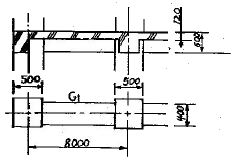
- 11.52m3m3
- 12.23m3
- 13.44m3
- 15.36
(정답률: 67%)
30. 콘크리트공사에서 진동기의 효과가 가장 잘 발휘될 수 있는 콘크리트는?
- 부배합 저슬럼프
- 부배합 고슬럼프
- 빈배합 저슬럼프
- 빈배합 고슬럼프
(정답률: 59%)
31. 공사관리방법 중 CM계약방식에 대한 설명으로 옳지 않은 것은?
- 프로젝트의 성공여부는 발주자와 설계자의 능력에 크게 의존한다.
- 프로젝트의 전 과정에 걸쳐 공사비, 공비 및 시공성에 대한 종합적인 평가 및 설계변경에 대한 효율적인 평가가 가능하여 발주자의 의사결정에 도움이 된다.
- 설계과정에서 성계가 시공에 미치는 영향을 예측할 수 있어 설계도서의 현실성을 향상시킬 수 있다.
- 단계별 시공을 적용할 수 있어 설계 및 시공시간을 크게 단축시킬 수 있다.
(정답률: 66%)
32. 사용할 때 마다 부재의 조립, 분해를 반복하지 않아 벽식구조인 아파트 건축물에 적용효과가 큰 대형 벽체거푸집은?
- Gang form
- Sliding form
- Air tube form
- Traveling form
(정답률: 83%)
33. 문 윗틀과 문짝에 설치하여 문이 자동적으로 닫혀지게 하며, 개폐압력을 조절할 수 있는 장치는?
- 도어 체크(Door check)
- 도어 홀더(Door holder)
- 피봇 힌지(Pivot hinge)
- 도어 체인(Door chain)
(정답률: 80%)
34. MCX(Minimum Cost Expediting)기법에 의한 공기단축에서 아무리 비용을 투자해도 그 이상 공기를 단축할 수 없는 한계점을 무엇이라 하는가?
- 표준점
- 특급점
- 포화점
- 경제 속도점
(정답률: 78%)
35. 콘크리트 공사 중 적산온도와 가장 관계 깊은 것은?
- 매스(mass)콘크리트 공사
- 수밀(水密)콘크리트 공사
- 한중(寒中)콘크리트 공사
- AE콘크리트 공사
(정답률: 80%)
36. 탄성 계수를 구할 때 변형 측정에 이용하는 것으로 가장 정밀도가 높은 것은?
- 다이얼 게이지
- 콤퍼레이터
- 마이크로미터
- 와이어 스트레인 게이지
(정답률: 67%)
37. 사운딩은 로드 선단에 붙인 저항체를 지중에 넣고 관입, 회전, 인발 등에 의해 토층의 성상을 탐사하는 시험법인데 이러한 사운딩에 속하지 않는 시험은?
- 표준관입시험
- 콘 관입시험
- 베인전단시험
- 말뚝재하시험
(정답률: 64%)
38. 언더피닝(Under Pinning)공법의 종류가 아닌 것은?
- 갱ㆍ피어공법
- 콘크리트 VH 타설법
- 그라우트주입공법
- 잭파일(jacked pile)공법
(정답률: 60%)
39. 신축할 건축물이 높이의 기준이 되는 주요 가설물로 이동의 위험이 없는 인근 건물의 벽 또는 담장에 설치하는 것은?
- 줄띄우기
- 벤치마크
- 규준틀
- 수평보기
(정답률: 76%)
40. 미장재료의 결합재에 대한 설명을 옳지 않은 것은?(문제 오류로 가답안 발표시 4번으로 발표되었지만 확정답안 발표시 2, 4번이 정답 처리 되었습니다. 여기서는 가답안인 4번을 누르면 정답 처리 됩니다.)
- 석고계 플라스터는 소석고에 경화시간을 조절할 수 있는 소석회 등의 혼화재를 미리 혼합하거나 사용시 혼합하여 사용하는 것을 말한다.
- 보드용 플라스터는 사용 시 모래를 혼합하여 반죽하는 것으로 바탕이 보드를 대상으로 하기 때문에 부착력이 매우 크다.
- 돌로마이트 플라스터는 미분쇄한 소석회 또는 사용시 생석회를 물에 장 연화한 석회크림에 해초 등을 끓인 용액 또는 수지 접착액과 혼합하여 사용하는 것이다.
- 혼합석고 플라스터 중 마감바름용은 사용 시 골재와 혼합하여 사용하고, 초벌바름용은 물만을 이용하여 비벼 사용한다.
(정답률: 55%)
3과목: 건축구조
41. 강구조 모살용접의 최소, 최대모살사이즈 기준에 대한 설명 중 옳지 않은 것은?
- 판두께 t < 6 mm인 경우의 최대 모살사이즈는 t mm이다.
- 판두께 t ≥ 6 mm인 경우의 최대 모살사이즈는 t-2 mm이다.
- 판두께 t ≤ 6 mm인 경우의 최소 모살사이즈는 2 mm이다.
- 판두께 6 < t ≤ 13 mm인 경우의 최소 모살사이즈는 5 mm이다.
(정답률: 58%)
42. 그림과 같은 연속보에 있어 절점 B의 회전을 저지시키기 위해 필요한 모멘트의 절대값은?
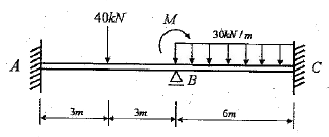
- 30 kNㆍm
- 60 kNㆍm
- 90 kNㆍm
- 120 kNㆍm
(정답률: 59%)
43. 그림과 같은 부정정 라멘에서 CD기둥의 전단력 값은?
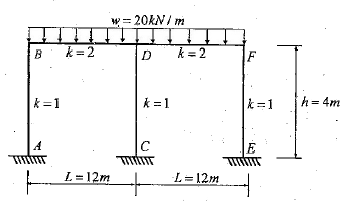
- 0
- 10kN
- 20kN
- 30kN
(정답률: 74%)
44. 구조용 강재 SHN 490에 대한 설명 중 옳은 것은?
- 건축구조용 열간압연 H형강이며, 인장강도는 490MPa 이다.
- 건축구조용 압연 H형강이며, 압축강도는 490MPa 이다.
- 용접구조용 압연 H형강이며, 인장강도는 490MPa 이다.
- 용접구조용 내후성 열간압연강재이며, 압축강도는 490MPa 이다.
(정답률: 53%)
45. 다음 그림과 같은 도형의 X축에 대한 단면2차모멘트는?
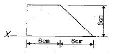
- 220cm4
- 240cm4
- 440cm4
- 540cm4
(정답률: 51%)
46. 강도설계법에서 벽체 전체 단면적에 대한 최소 수직ㆍ수평 철근비로 옳은 것은? (단, fy=400MPa, D13 철근 사용)
- 수직철근비 0.0012, 수평철근비 0.0020
- 수직철근비 0.0015, 수평철근비 0.0020
- 수직철근비 0.0015, 수평철근비 0.0025
- 수직철근비 0.0020, 수평철근비 0.0025
(정답률: 56%)
47. 지진에 대응하는 기술 중 하나인 제진(制震)에 대한 설명으로 옳지 않은 것은?
- 기존 건물의 구조형식에 좌우되지 않는다.
- 지반종류에 의한 제약을 받지 않는다.
- 소형 건물에 일반적으로 많이 적용된다.
- 댐퍼 등을 사용하여 흔들림을 효과적으로 제어한다.
(정답률: 63%)
48. 보통중량콘크리트를 사용한 그림과 같은 보의 단면에서 외력에 의해 휨 균열을 일으키는 균열모멘트(Mcr) 값으로 옳은 것은? (단, fck=27MPa, fy=400MPa, 철근은 개략적으로 도시되었음)
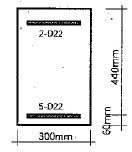
- 29.5 kNㆍm
- 34.7 kNㆍm
- 40.9 kNㆍm
- 52.4 kNㆍm
(정답률: 62%)
49. 부하면적 36m2인 콘크리트 기둥의 영향면적에 따른 활하중저감계수(C)로 옳은 것은? (단,
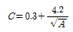
, A는 영향면적)- 0.25
- 0.45
- 0.65
- 1
(정답률: 54%)
50. 단면의 크기가 500mm×500mm인 띠철근 기둥이 저항할 수 있는 최대설계축하중 øPn을 구하면? (단, fy=400MPa, fck=27MPa)
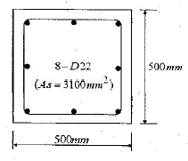
- 3591 kN
- 3972 kN
- 4170 kN
- 4275 kN
(정답률: 59%)
51. 구조시스템의 분류에 있어 복합구조로 보기 어려운 것은?
- 철골철근콘크리트 기둥에 철골 보를 이용한 구조
- 철골철근콘크리트 기둥에 철근콘크리트 보를 이용한 구조
- 철근콘크리트 기둥에 철근콘크리트 보를 이용한 구조
- 철근콘크리트 기둥에 철골 보를 이용한 구조
(정답률: 71%)
52. 다음 트러스구조물에서 C부재의 부재력을 구하면? (단, +는 인장, -는 압축)
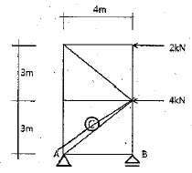
- 4.5kN(+)
- 4.5kN(-)
- 7.5kN(+)
- 7.5kN(-)
(정답률: 36%)
53. 강도설계법에 따라 아래 그림과 같은 단철근 직사각형보의 균형 철근비를 구하면? (단, fck=24MPa, fy=300MPa)
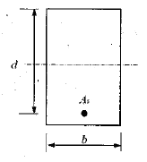
- 0.027
- 0.039
- 0.045
- 0.⑤7
(정답률: 47%)
54. 철골구조물의 보 단부에서 회전을 허용하지 않고 100%에 가까운 단부 모멘트를 기둥 또는 이음부에 전달하는 개념의 접합부 형태는?
- 강접합
- 반강접합
- 전단접합
- 단순접합
(정답률: 58%)
55. 한계상태설계법에 따라 강구조물을 설계할 때 고려되는 강도한계상태가 아닌 것은?
- 기둥의 좌굴
- 접합부 파괴
- 피로 파괴
- 바닥재의 진동
(정답률: 73%)
56. 고력볼트 1개의 인장파단 한계상태에 대한 설계인장강도는? (단, 볼트의 등급 및 호칭은 F10T, M20)
- 177 kN
- 236 kN
- 315 kN
- 385 kN
(정답률: 45%)
57. 다음 그림과 같은 구조물의 판별로 옳은 것은?
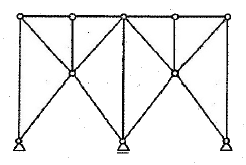
- 불안정
- 정정
- 1차부정정
- 2차부정정
(정답률: 63%)
58. 다음 그림과 같은 보에서 A점의 수직반력을 구하면?
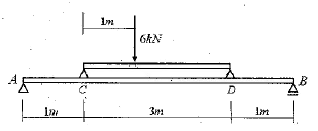
- 2.4 kN
- 3.6 kN
- 4.8 kN
- 6.0 kN
(정답률: 64%)
59. 독립기초의 크기가 1500mm×1500mm이고, 지지되는 정방형 기둥의 단면이 300mm×300mm 일 경우, 현장치기 콘크리트 시공에서 기초와 기둥 접촉면 사이에 배근되어야 할 최소 철근량으로 옳은 것은?
- 300mm2
- 350mm2
- 400mm2
- 450mm2
(정답률: 37%)
60. 강도설계법에서 D22 압축철근의 기본정착길이는? (단, 경량콘크리트 계수는 1, fck=27MPa, fy=400MPa)
- 200.5mm
- 378.4mm
- 423.4mm
- 604.6mm
(정답률: 63%)
4과목: 건축설비
61. 냉방부하 계산 결과 현열부하가 620W, 잠열부하가 155W일 경우, 현열비는?
- 0.2
- 0.25
- 0.4
- 0.8
(정답률: 72%)
62. 각 층마다 옥내소화전이 3개씩 설치되어 있는 건물에서 옥내소화전설비의 수원의 저수량은 최소 얼마 이상이 되도록 하여야 하는가?(2021년 04월 01일 개정된 규정 적용됨)
- 10.4m3
- 7.8m3
- 7.5m3
- 5.2m3
(정답률: 64%)
63. 급탕설비에 관한 설명으로 옳지 않은 것은?
- 냉수, 온수를 혼합사용해도 압력차에 의한 온도변화가 없도록 한다.
- 배관은 적정한 압력손실 상태에서 피크시를 충족시킬수 있어야 한다.
- 도피관에는 압력을 도피시킬 수 있도록 밸브를 설치하고 배수는 직접배수로 한다.
- 밀폐형 급탕시스템에는 온도상승에 의한 압력을 도피시킬수 있는 팽창탱크 등의 장치를 설치한다.
(정답률: 77%)
64. 다음의 자동화재 탐지설비의 감지기 중 설치가능한 부착높이가 가장 높은 것은?
- 연기감지기
- 정온식 감지기
- 차동식 분포형 감지기
- 차동식 스포트형 감지기
(정답률: 73%)
65. 온열지표 중 기온, 습도, 기류, 주벽면온도의 4요소를 조합하여 체감과의 관계를 나타낸 것은?
- 작용온도
- 불쾌지수
- 등온지수
- 유효온도
(정답률: 57%)
66. 흡음 및 차음에 관한 설명으로 옳지 않은 것은?
- 벽의 차음성능은 투과손실이 클수록 높다.
- 차음성능이 높은 재료는 대부분 흡음성능도 높다.
- 실내 벽면의 흡음률이 높아지면 잔향시간은 짧아진다.
- 철근콘크리트 벽은 동일한 두께의 경량콘크리트 벽보다 차음성능이 높다.
(정답률: 78%)
67. 에스컬레이터에 관한 설명으로 옳지 않은 것은?
- 장거리 대량수송을 할 때 효과적이다.
- 800형 에스컬레이터의 공칭 수송능력은 6000인/h 이다.
- 경사도가 30° 이하인 에스컬레이터의 공칭속도는 0.75m/s 이하이어야 한다.
- 수송량에 비해 점유면적이 적으며, 연속 운전되므로 전원 설비에 부담이 적다.
(정답률: 56%)
68. 다음 중 급수방식으로 압력탱크 방식을 채택하는 경우와 가장 거리가 먼 것은?
- 설치환경의 제약으로 고가탱크 방식의 적용이 어려운 경우
- 급수 공급 압력의 변화가 심하고 수질 오염의 우려가 큰 경우
- 동일한 높이에 설치된 다른 장비에 적절한 수압을 얻을 수 없는 경우
- 고가탱크 방식으로는 제일 높은 층에서 필요로 하는 압력을 얻을 수 없는 경우
(정답률: 61%)
69. 엘리베이터의 일주시간 구성 요소에 속하지 않는 것은?
- 주행시간
- 도어개폐시간
- 승객출입시간
- 승객대기시간
(정답률: 68%)
70. 통기관에 관한 설명으로 옳지 않은 것은?
- 2개 이상의 횡지관이 있는 배수입상관에는 통기입상관을 설치하여야 한다.
- 위생배관의 통기관은 위생배관의 통기 이외의 다른 목적으로 사용하지 않는다.
- 통기관은 위생기구의 물 넘침선 보다 150mm 이상 높게 배관하여 연결하는 것이 원칙이다.
- 여러 개의 통기관을 입상관 상부 끝에서 공통 헤더로 연결하여 한 곳에서 대기에 개방할 수 있다.
(정답률: 35%)
71. 다음 중 옥내의 건조한 노출장소에 시설할 수 없는 배선 공사는?
- 금속관 배선
- 금속몰드 배선
- 플로어덕트 배선
- 합성수지몰드 배선
(정답률: 61%)
72. 증기난방에 관한 설명으로 옳지 않은 것은?
- 계통별 용량제어가 곤란하다.
- 한랭지에서 동결의 우려가 적다.
- 예열시간이 온수난방에 비하여 짧다.
- 부하변동에 따른 실내방열량의 제어가 용이하다.
(정답률: 75%)
73. 길이 1m, 구경 100mm의 관내를 유속2.0m/s로 물이 흐르고 있을 때 직관부의 마찰손실은 얼마인가? (단, 물의 밀도는 1000kg/m3, 관마찰계수는 0.03 이다.)
- 6Pa
- 60Pa
- 600Pa
- 6000Pa
(정답률: 43%)
74. 압력에 따른 도시가스의 분류에서 고압의 기준으로 옳은 것은?
- 0.1MPa 이상
- 1MPa 이상
- 10MPa 이상
- 100MPa 이상
(정답률: 72%)
75. 공기조화방식 중 팬코일 유닛방식에 관한 설명으로 옳지 않은 것은?
- 덕트 방식에 비해 유닛의 위치 변경이 쉽다.
- 각 실에 수배관으로 인한 누수의 우려가 있다.
- 덕트 샤프트나 스페이스가 필요 없거나 작아도 된다.
- 유닛을 수동으로 제어할 수 없어 개별 제어가 불가능하다.
(정답률: 67%)
76. 실내에 4500W를 발열하고 있는 기기가 있다. 이 기기의 발열로 인해 실내 온도상승이 생기지 않도록 환기를 하려고 할 때, 필요한 최소 환기량은? (단, 공기의 밀도는 1.2kg/m3, 비열은 1.01kJ/kgㆍK, 실내온도는 20℃, 외기온도는 0℃ 이다.)
- 약 452 m3/h
- 약 668 m3/h
- 약 856 m3/h
- 약 928 m3/h
(정답률: 61%)
77. 조명설비에서 눈부심에 관한 설명으로 옳지 않은 것은?
- 광원의 크기가 클수록 눈부심이 강하다.
- 광원의 휘도가 작을수록 눈부심이 강하다.
- 광원의 시선에 가까울수록 눈부심이 강하다.
- 배경이 어둡고 눈이 암순응 될수록 눈부심이 강하다.
(정답률: 78%)
78. 공조시스템의 소음방지 대책으로 옳지 않은 것은?
- 덕트의 도중에 댐퍼를 설치한다.
- 덕트의 내부에 흡음재를 부착한다.
- 송풍기의 출구 부근에 플리넘 챔버를 장치한다.
- 덕트의 적당한 장소에 셀형이나 플레이트형의 흡음장치를 설치한다.
(정답률: 58%)
79. 피뢰시스템에 관한 설명으로 옳지 않은 것은?
- 피뢰시스템은 보호성능 정도에 따라 등급을 구분한다.
- 피뢰시스템의 등급은 Ⅰ, Ⅱ, Ⅲ의 3등급으로 구분된다.
- 수뢰부시스템은 보호범위 산정방식(보호각, 회전구체법, 메시법)에 따라 설치한다.
- 피보호건축물에 적용하는 피뢰시스템의 등급 및 보호에 관한 사항은 한국산업표준의 낙뢰리스트평가에 의한다.
(정답률: 78%)
80. 간선의 배선 방식 중 분전반에서 사고가 발생했을 때 그 파급 범위가 가장 적은 것은?
- 루프식
- 평행식
- 나뭇가지식
- 나뭇가지 평행식
(정답률: 77%)
5과목: 건축법규
81. 다음 중 허가대상에 속하는 용도변경은?
- 숙박시설에서 의료시설로의 용도변경
- 판매시설에서 문화 및 집회시설로의 용도변경
- 제1종 근린생활시설에서 업무시설로의 용도변경
- 제1종 근린생활시설에서 공동주택으로의 용도변경
(정답률: 54%)
82. 주차전용건축물이란 건축물의 연면적 중 주차장으로 사용되는 부분의 비율이 최소 얼마 이상인 건축물을 말하는가? (단, 주차장 외의 용도로 사용되는 부분이 숙박시설인 경우)
- 70%
- 80%
- 85%
- 95%
(정답률: 37%)
83. 다음의 대지와 도로와의 관계에 관한 기준 내용 중 ( )안에 알맞은 것은?
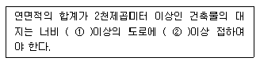
- ① 8m, ② 6m
- ① 8m, ② 4m
- ① 6m, ② 4m
- ① 4m, ② 2m
(정답률: 77%)
84. 건축물에 설치하는 지하층의 구조 및 설비에 관한 기준 내용으로 옳지 않은 것은?
- 거실의 바닥면적의 합계가 500m2 이상인 층에는 환기 설비를 설치할 것
- 지하층의 바닥면적이 300m2 이상인 층에는 식수공급을 위한 급수전을 1개소 이상 설치할 것
- 바닥면적이 1000m2 이상인 층에는 피난층 또는 지상으로 통하는 직통계단을 방화구획으로 구획되는 각 부분마다 1개소 이상 설치할 것
- 위락시설 중 유흥주점의 용도에 쓰이는 층으로서 그 층의 거실의 바닥면적의 합계가 50m2 이상인 건축물에는 직통 계단을 2개소 이상 설치할 것
(정답률: 41%)
85. 공사감리자가 필요하다고 인정하는 경우 공사시공자로 하여금 상세시공도면을 작성하도록 요청할 수 있는 건축공사의 규모 기준으로 옳은 것은?
- 연면적 합계가 3000m2 이상인 건축공사
- 연면적 합계가 5000m2 이상인 건축공사
- 연면적 합계가 10000m2 이상인 건축공사
- 연면적 합계가 15000m2 이상인 건축공사
(정답률: 65%)
86. 철근콘크리트조인 경우 두께에 관계없이 내화구조로 인정되는 것은?
- 바닥
- 지붕
- 내력벽
- 외벽 중 비내력벽
(정답률: 64%)
87. 다음 중 제2종 일반거주지역안에서 건축할 수 있는 건축물에 속하지 않는 것은?
- 종교시설
- 운수시설
- 노유자시설
- 제1종 근린생활시설
(정답률: 67%)
88. 비상용승강이 승강장의 구조에 관한 기준 내용으로 옳지 않은 것은?
- 벽 및 반자가 실내에 접하는 부분의 마감재료는 불연재료로 할 것
- 옥내 승강장의 바닥면적은 비상용승강이 1대에 대하여 6m2 이상으로 할 것
- 채광을 위한 창문 등을 설치하여서는 안되며 예비전원에 의한 조명설비를 할 것
- 피난층이 있는 승강장의 출입구로부터 도로 또는 공지에 이르는 거리가 30m 이하일 것
(정답률: 63%)
89. 건축물을 특별시나 광역시에 건축하는 경우 특별시장이나 광역시장의 허가를 받아야 하는 대상 건축물의 층수 기준은?
- 7층 이상
- 15층 이상
- 21층 이상
- 25층 이상
(정답률: 74%)
90. 시설물의 부지인근에 단독 또는 공동으로 설치할 수 있는 부설주차장의 규모 기준은?
- 200대 이하
- 250대 이하
- 300대 이하
- 350대 이하
(정답률: 69%)
91. 문화 및 집회시설 중 공연장의 개별관람석의 출구에 관한 설명으로 옳지 않은 것은? (단, 개별관람석의 바닥면적은 500m2 이다.)
- 관람석별로 2개소 이상 설치하여야 한다.
- 각 출구의 유효너비는 1.2m 이상으로 하여야 한다.
- 바깥쪽으로의 출구로 쓰이는 문은 안여닫이로 하여서는 안된다.
- 개별관람석 출구의 유효너비의 합계는 3m 이상으로 하여야 한다.
(정답률: 66%)
92. 문화재ㆍ전통사찰 등 역사ㆍ문화적으로 보존가치가 큰 시설 및 지역의 보호 및 보존을 위하여 필요한 지구는?(오류 신고가 접수된 문제입니다. 반드시 정답과 해설을 확인하시기 바랍니다.)
- 생태계보존지구
- 역사문화미관지구
- 중요시설물보존지구
- 역사문화환경보존지구
(정답률: 70%)
93. 다음 중 건축면적에 산입하지 않는 대상 기준으로 옳지 않은 것은?
- 지하주차장의 경사로
- 지표면으로부터 1.8m 이하에 있는 부분
- 건축물 지상층에 일반인이 통행할 수 있도록 설치한 보행통로
- 건축물 지상층에 차량이 통행할 수 있도록 설치한 차량 통로
(정답률: 63%)
94. 건축물을 건축하거나 대수선하는 경우 건축물의 설계자가 국토교통부령으로 정하는 구조기준 등에 따라 그 구조의 안전을 확인하여야 하는 대상 건축물에 속하지 않는 것은?
- 층수가 3층인 건축물
- 높이가 12m인 건축물
- 처마높이가 9m인 건축물
- 기둥과 기둥 사이의 거리가 10m인 건축물
(정답률: 52%)
95. 중앙도시계획위원회에 관한 설명으로 옳지 않은 것은?
- 위원장 및 부위원장은 위원 중에서 국토교통부장관이 임명하거나 위촉한다.
- 공무원이 아닌 위원의 수는 10명 이상으로 하고, 그 임기는 2년으로 한다.
- 위원장ㆍ부위원장 각 1명을 포함한 15명 이상 50명 이내의 위원으로 구성한다.
- 회의는 재적위원 과반수의 출석으로 개의하고, 출석위원 과반수의 찬성으로 의결한다.
(정답률: 59%)
96. 층수가 10층이며, 각 층의 거실면적이 2000m2인 사무소 건물에 설치하여야 하는 승용승강기의 최소 대수는? (단, 승용승강기는 15인승을 기준으로 한다.)
- 4대
- 5대
- 6대
- 7대
(정답률: 56%)
97. 국토의 계획 및 이용에 관한 법령에 따른 기반시설 중 공간시설에 속하지 않는 것은?
- 녹지
- 유원지
- 유수지
- 공공공지
(정답률: 64%)
98. 다음의 가설건축물과 관련된 기준 내용 중 밑줄 친 대통령령으로 정하는 용도의 가설건축물에 속하지 않는 것은?
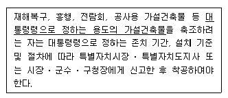
- 전시를 위한 견본 주택
- 연면적이 50m2인 간이축사용 비닐하우스
- 공사에 필요한 규모의 공사용 가설건축물
- 조립식 경량구조로 된 외벽이 없는 임시 자동차 차고
(정답률: 66%)
99. 다음 중 부설주차장의 설치기준이 다른 시설물은?
- 숙박시설
- 종교시설
- 판매시설
- 운수시설
(정답률: 51%)
100. 그림과 같은 거실의 평균 반자 높이는? (단, 단위는 m)
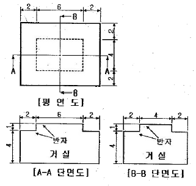
- 4.3m
- 4.6m
- 4.9m
- 5.2m
(정답률: 62%)